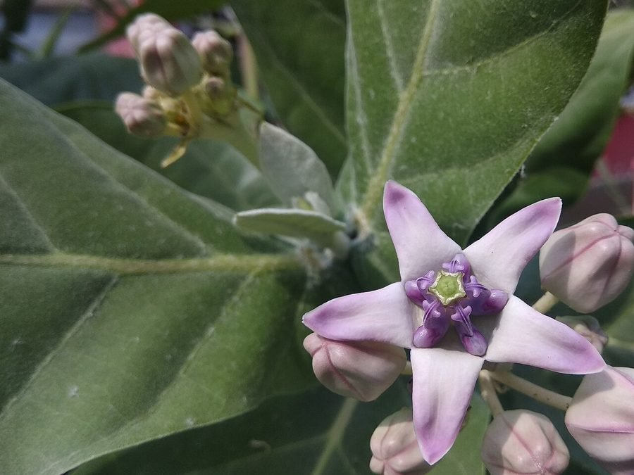

आकGiant Milkweed
Calotropis gigantea · Apocynaceae · FLR-0002

- Scientific name
- Calotropis gigantea (L.) W.T.Aiton
- Family
- Apocynaceae
- Hindi
- आक / मदार / अर्क
- Status here
- native
- IUCN
- not evaluated
When to look कब देखें
Present all year.
आक / Giant Milkweed
Calotropis gigantea (L.) W.T.Aiton — Apocynaceae
आक — बंजर ज़मीन और सड़क किनारे का वह मोटी पत्तियों वाला देशी झाड़ जिसे लोग बेकार मानते हैं। कोई भी हिस्सा तोड़ने पर तुरंत सफेद दूधिया रस — जो जहरीला है, पर यही जहर प्लेन टाइगर तितली को पक्षियों से बचाता है। बैंगनी-सफेद तारे जैसे फूल; मार्च-अप्रैल में फलियाँ फटती हैं तो रेशमी धागों वाले बीज हवा में उड़ते हैं। बंजर मिट्टी का पहला पौधा, तितलियों का आश्रय, और आयुर्वेद का पुराना साथी। गाँव के इस सबसे उपेक्षित पौधे का सबसे बड़ा पारिस्थितिक महत्व है।
Quick Identification त्वरित पहचान
| Feature | Description |
|---|---|
| Leaves | Large (10–20 cm), thick, rubbery, grey-green; fine white powder on surface; sessile — no leaf stalk, clasp stem directly |
| Flowers | 3–4 cm; five petals purple-tipped with white base; crown-like corona in centre; waxy, mildly fragrant; in axillary clusters |
| Latex | Milky white sap oozes immediately from any broken part — most diagnostic sign |
| Fruit | Large paired oval pods (8–12 cm), inflated, smooth; split to release seeds with long silky white fibres |
| Height | 1.5–4 m shrub to small tree; pale grey-white corky bark |
| Habitat | Roadsides, wastelands, sandy and saline soils — most abundant on land where nothing else grows |
Field tip: Any shrub with thick grey-green powdery leaves, star-shaped purple-and-white flowers, and white latex oozing on breaking — it is Calotropis. The two UP species (C. gigantea and C. procera) look very similar: gigantea has larger, whiter flowers and larger fruits; procera has more purple flowers and smaller apple-shaped fruits. Both are ecologically equivalent and often found side by side.
Morphology आकारिकी
| Feature | Measurement |
|---|---|
| Plant height | 1.5–4.0 m |
| Leaf length | 10–20 cm |
| Leaf width | 4–10 cm |
| Flower diameter | 3–4 cm |
| Fruit / seed dimensions | Follicles 8–12 cm × 3–4 cm; seeds 6–8 mm × 4–5 mm |
Stem and bark: Pale grey-white, soft and corky when young, becoming woodier with age. Contains abundant latex throughout — any wound causes immediate white sap flow.
Leaves: Opposite, sessile (no stalk — they clasp the stem directly), broadly elliptic, 10–20 cm long. Surface covered in fine whitish waxy bloom. Thick and fleshy — adapted for water retention in dry soils.
Flowers: 3–4 cm across. Five petals, purple-tipped with white base, forming a crown-like corona in the centre. Borne in axillary cymes. Slightly waxy, mildly fragrant. Complex flower structure requires large insects to access nectar.
Fruit (follicle): Paired large pods, 8–12 cm long, inflated, smooth, green ripening to pale brown. Split along one side to release seeds.
Seeds: Flat, brown, with a tuft of long silky white fibres (coma) for wind dispersal — visually striking when pods burst open in March–April.
Latex: Abundant white milky sap throughout. Contains toxic cardiac glycosides (calotropin, uscharin). Caution: Do not apply to eyes — causes temporary blindness.
Ecological Role पारिस्थितिक भूमिका
Keystone butterfly host plant. This is the most important ecological role of Calotropis in eastern UP. The Plain Tiger butterfly (Danaus chrysippus) lays its eggs exclusively on Calotropis. The caterpillars eat the leaves, absorbing the toxic cardiac glycosides into their bodies — making the adult butterfly chemically unpalatable to birds. This is a textbook example of chemical sequestration for defence. The Striped Tiger (D. genutia) also uses it. Remove Calotropis from a village margin and you remove the butterfly nursery for two of the most conspicuous and ecologically important butterfly species of the region.
Pioneer on hostile soils. Calotropis establishes on compacted, saline, and sandy soils where almost nothing else grows — beginning the process of organic matter accumulation and soil improvement for later plants. It is a true ecological pioneer whose presence on wasteland is not a sign of land degradation but of recovery.*
Pollinator support. The complex flower structure requires strong insects — mainly carpenter bees (Xylocopa) and large bumblebees — that can push through the corona to access nectar. Calotropis is a reliable year-round nectar source for large bees in disturbed habitats. The Purple Sunbird (Cinnyris asiaticus, BRD-0016) also visits regularly, sometimes transferring pollinia on its bill.
Food web node. Calotropis hosts a characteristic community:
- Plain Tiger and Striped Tiger butterfly larvae (obligate herbivores)
- Milkweed aphids (Aphis nerii) — a specialist aphid found almost nowhere else
- Red Cotton Bug (Dysdercus cingulatus, INS-0001) — feeds on pods and seeds
- Assassin bugs and predatory beetles — prey on the aphids and bugs
- Birds visit for insects; Shikra uses dense stands for ambush
Life Cycle / Phenology जीवन चक्र
- Perennial shrub — lives many years; does not die back seasonally; the same plants persist for decades
- Flowering: Peak in winter–spring (November–March); occasional flowers year-round
- Fruiting: January–April; pods burst and disperse seeds by April–May
- Growth: Fastest after monsoon; tolerates summer drought with an established root system
- Propagation: Primarily by wind-dispersed seeds; also regenerates from root fragments after cutting — making manual removal temporary without follow-up
- In eastern UP: Visible and green year-round; flowers best in cool months
Host Plants or Prey आहार
Not applicable — autotroph. Key organisms dependent on this plant:
- Plain Tiger butterfly (Danaus chrysippus) — obligate larval host
- Striped Tiger butterfly (D. genutia) — larval host
- Milkweed aphid (Aphis nerii) — monophagous specialist; almost only found on Calotropis
- Red Cotton Bug (Dysdercus cingulatus, INS-0001) — feeds on pods and seeds
- Carpenter bees (Xylocopa spp.) — primary nectar foragers and pollinators
- Purple Sunbird (BRD-0016) — nectar visitor; occasional pollinium disperser
Predators / Natural Enemies शत्रु
- Cattle and goats — generally avoid due to toxic latex; occasional browsing by goats on young shoots
- Milkweed aphid predators — ladybird beetles (Coccinella, Menochilus) consume aphid colonies
- Bruchid beetles — attack seeds inside pods
- Human removal — clearing of wasteland for construction and road widening; direct cutting is the primary threat in this region
Agricultural / Human Relevance कृषि प्रासंगिकता
Largely neutral to agriculture. Calotropis occupies marginal wasteland rather than cropland, so direct crop competition is minimal. Its presence near fields provides a year-round insect reservoir (including pests like Dysdercus but also their predators and the pollinators that serve fruit crops).
Traditional and medicinal uses (Ayurvedic — use only under expert guidance):
| Plant part | Traditional use |
|---|---|
| Root bark | Fever, skin diseases, leprosy |
| Latex (processed, tiny amounts) | Dental pain, wound healing |
| Leaf (heated, external) | Joint pain poultice |
| Flowers | Asthma, digestive issues |
| Seed fibres | Stuffing, ropes, lamp wicks |
Important safety note: Raw latex contains potent cardiac glycosides. Ingestion causes vomiting, heart arrhythmia, and can be fatal. Do not apply latex to eyes — causes temporary blindness. All medicinal uses require expert guidance.
Folk uses in Basti district: Leaves used as base layer in manure pits (believed to accelerate composting); latex used by some villagers to remove thorns embedded in skin; seed fibres used for lamp wicks (batti) and traditional mattress stuffing.
Expected Locally स्थानीय रूप से अपेक्षित
Not a field record. Written from published accounts for eastern Uttar Pradesh. No confirmed local sighting yet — if you have seen it, that is what the atlas needs.
अभी तक स्थानीय पुष्टि नहीं। यह विवरण प्रकाशित स्रोतों से है, किसी अवलोकन से नहीं।
Common year-round on roadsides, canal banks, cremation grounds (shamshan ghat), and wasteland throughout Basti district. Particularly conspicuous in winter–spring (November–March) when in full flower. Plain Tiger caterpillars (yellow-white-black banded) can be found on leaves year-round — searching a single large plant for 10 minutes usually yields at least one larval instar. Pod-bursting in March–April sends silky seed-fibre clouds drifting across roadsides. The milkweed aphid (Aphis nerii) forms dense orange colonies on young shoots — these in turn attract ladybirds, assassin bugs, and insectivorous birds. The plant is one of the best sites in the region for observing insect-plant-bird interactions.
Distribution वितरण
Global range: Native to South and Southeast Asia, including India, Pakistan, Nepal, Bangladesh, Sri Lanka, Myanmar, China, Thailand, and Indonesia.
In India: Widespread across most states, particularly in the plains, coastal areas, and disturbed dry regions up to 1,000 m elevation.
In Uttar Pradesh: Abundant throughout the state, especially along roadsides, wastelands, and canal banks in both arid and semi-arid zones.
In Basti district / eastern UP: Extremely common year-round resident; found on dry sandy banks, margins of fields, and rural wastelands.
Range notes: Global range status has not been formally assessed by IUCN.
Research Questions शोध प्रश्न
- How many Plain Tiger caterpillars can be counted on a single plant of known size? Count and record date and plant size — this builds density data.
- What insects visit the flowers? Observe for 30 minutes in the morning. Carpenter bees are the most common visitor — are there others?
- Do birds avoid Plain Tiger butterflies resting on Calotropis — documenting aposematic protection in real time?
- Is Calotropis expanding or shrinking in the Basti area? Note stands over two years — does road widening or development affect it?
- What other insects live on Calotropis? Spend 20 minutes searching leaves, stems, and flowers and list everything found — baseline species list.
Similar Species मिलती-जुलती प्रजातियाँ
| Species | Key Difference |
|---|---|
| Calotropis procera (Sodom Apple / लाल आक) | Smaller, more purple flowers; fruits smooth and apple-shaped (not elongated); both species grow in UP |
| Asclepias curassavica (Tropical Milkweed) | Red-and-orange flowers; much smaller plant; garden ornamental; not wild in UP |
Taxonomy & Classification वर्गीकरण
Original description. Calotropis gigantea was described by Carl Linnaeus in 1753 under the name Asclepias gigantea in his seminal work Species Plantarum (1: 212). It was transferred to the genus Calotropis by William Townsend Aiton in 1811 in Hortus Kewensis (2nd edition, 2: 78). The genus name Calotropis is derived from Greek words meaning "beautiful keel," referring to the flower's corona structure.
Subspecies. Monotypic — no subspecies are currently recognised.
Family and order placement. Calotropis belongs to the family Apocynaceae (milkweed and dogbane family) and order Gentianales. In older taxonomic systems, it was placed in the separate family Asclepiadaceae, but molecular cladistic studies integrated Asclepiadaceae as a subfamily (Asclepiadoideae) within Apocynaceae (Endress & Bruyns 2000). The family includes over 5,000 species worldwide.
Phylogenetic notes. Calotropis gigantea is closely related to Calotropis procera (Sodom Apple), with which it hybridises occasionally in overlapping zones. No major taxonomic controversies are currently active for this species.
IUCN status rationale. Global range status has not been formally assessed by IUCN. The species is highly abundant, adaptable, and faces no major threats; indeed, agricultural land clearing and roadside disturbance often create new habitats for it.
Photo Gallery फोटो गैलरी
References संदर्भ
- Linnaeus, C. (1753). Species Plantarum. Laurentii Salvii, Holmiae. [original description]
- Aiton, W.T. (1811). Hortus Kewensis; or, A Catalogue of the Plants Cultivated in the Royal Botanic Garden at Kew. 2nd ed. Vol. II. Longman, Hurst, Rees, Orme, and Brown, London. [genus transfer]
- Endress, M.E. & Bruyns, P.V. (2000). A systematic reconstruction of the Apocynaceae s.l. The Botanical Review, 66(1), 1–56.
- Botanical Survey of India — Flora of UP and Uttarakhand.
- Kirtikar, K.R. & Basu, B.D. (1918). Indian Medicinal Plants. Vol. II. Lalit Mohan Basu, Allahabad.
- Dagar, H.S. & Dagar, J.C. (1987). Plant folklore of tribals of Andaman and Nicobar Islands. Economic Botany, 41(1), 110–119.
- Akhila, A. & Rani, K. (2002). Chemistry of the genus Calotropis. Fortschritte der Chemie organischer Naturstoffe, 84, 181–283.
- GBIF Occurrence Data — Calotropis gigantea, Uttar Pradesh (2000–2024).
Source file: species/flora/weeds/calotropis_gigantea.md